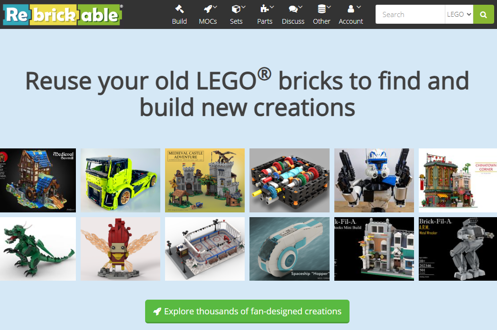
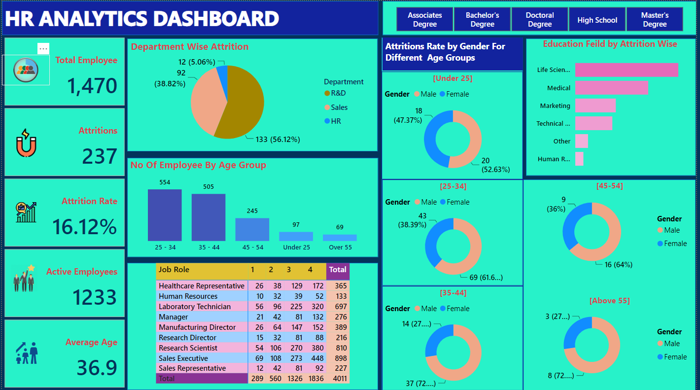

In this project, I utilized SQL Server for thorough data exploration. Specifically, I showcased my proficiency in employing joins to handle the complexity of multiple tables within the dataset. Through meticulous data cleaning and the application of advanced calculations, I successfully generated actionable insights, demonstrating my ability to extract value from complex datasets..


This Project was created using power bi and it demonstrates a highly interactive and Dynamic Dasboard.

This very project actually has a back story. Until recently, pizza wasn't something I cared much for. It all changed when a dear friend introduced me to this wonderful new pizza place, igniting my taste buds with whole new flavors. After indulging in countless visits over a month, I felt a profound inspiration to delve into a pizza-related project and I'm glad i did because i enjoyed every momemt spent on this project.

To oversee and evaluate our bank's lending activities and performance, I developed an extensive bank loan report within the SQL Server project. This report is designed to offer insights into crucial loan-related metrics and their fluctuations over time.
By leveraging this report, we can make informed, data-driven decisions, monitor the well-being of our loan portfolio, and identify trends that can guide our lending strategies..

The 'Road Accident Dashboard' project I built using Excel shows how good I am at working with data. It proves I'm skilled at cleaning up messy data, organizing it, and finding useful insights using Excel's tools.
After earning my degree in urban planning, I became deeply involved in addressing various housing challenges, particularly during my IT placements which lasted for 12 months. It was this profound connection to my field that inspired me to embark on a project closely tied to my studies.

The Power BI dashboard was crafted utilizing advanced analytics, highlighting proficiency in tasks such as data cleansing, preprocessing, Modelling and deriving insightful data analytics through DAX functions.
This Data analysis and exploration was completed using Microsoft Sql server.

In this project, I used SQL Server to analyze sales data, uncovering insights that reveal trends and patterns in pizza consumption.